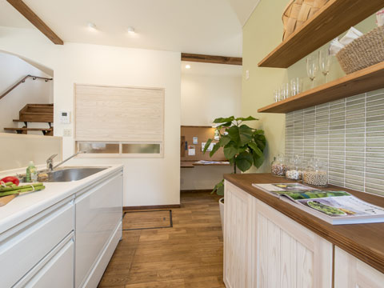
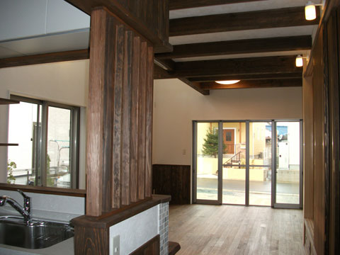
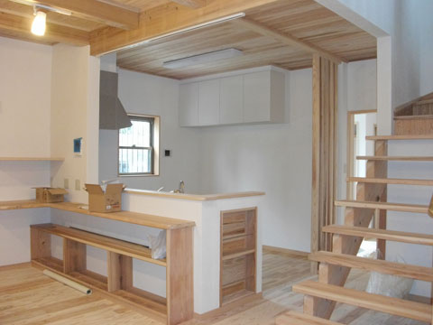
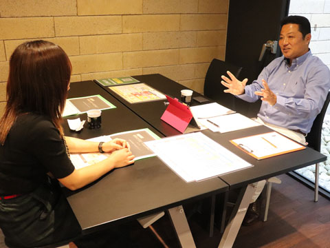
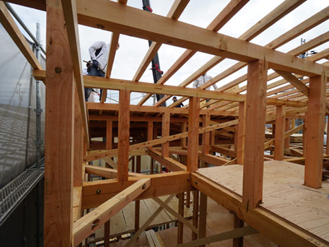

- ホーム
- 初めての方へ「ココロホームの家づくり」｜家づくりのコンセプト
Concept「自然」にこだわるココロホームのコンセプト
安心して過ごせる「自然」を
活かした家づくり

豊中市で自然素材にこだわった注文住宅をつくるココロホームのコンセプトについてご紹介しています。
当社が手掛ける住宅は天然木材にこだわり、国産の無垢材・自然素材・天然素材を使用した安全・安心な注文住宅をご提案しています。安らぎを感じながら過ごしていただける住まいを実現するために、私たちは全力を尽くします。
ココロホームが選ばれる理由
POINT1「本物を追求した健康住宅」

シックハウスなどの問題に対して、「健康住宅」をうたった住宅が増えています。しかし、明確な基準が定められていないために一部を天然素材にしただけで健康住宅と呼んで販売しているのが現状です。
ココロホームは「本物の健康住宅」にこだわり、徹底して国産素材を使用した住宅をご提案しています。コストに不安を覚えるお客様もいらっしゃいますが、基本価格が決まっているため安心です。もちろん、ご要望に合わせた特別仕様などオプションも追加できます。
自然素材にこだわりを持っておりますが、必要に応じて自然素材以外の注文住宅も対応可能です。素材についてもお気軽にご相談ください。
POINT2「ご予算に合わせたムダのないご提案」

家づくりは人生における非常に大きな買い物です。妥協できない点もたくさんあるかと思いますが、大切なのは家づくりそのものではなく家をつくったあとの家族の生活ではないでしょうか。
せっかく理想の住まいをつくっても、住宅ローンに圧迫されて生活を楽しめなくなってしまっては「豊かな生活」とは言えません。当社では、ご予算についてもしっかりと相談を重ねてムダや無理が起こらないご提案をしています。
POINT3「資金計画・土地探しからお客様と向き合ってお手伝い」

理想の住まいをつくり、豊かな生活を送るために大切なのが「資金計画」です。大手ハウスメーカーと比べて低コストで住宅ローンを無理なく返済、さらにワンランク上の家をご提案できるよう企業努力をしています。
また、家を建てるための土地が決まっていないお客様には土地探しからお手伝いすることで、より最適なご提案ができます。建築士の資格を持った代表と住宅アドバイザーがムダを省いたご提案をしますので、まずは詳しいご要望をお聞かせください。福祉住環境コーディネーターの資格も保有していますので、全ての方がやさしい住環境をご提案することができます。
POINT4「こだわりの素材と高い技術の職人」

ココロホームでは、自然素材の建材を取り扱っている全国規模のネットワークに加盟しています。そのため国産の天然素材であっても低コストで仕入れることが可能です。
また、施工は信頼できる高い技術を持ったスタッフを抱える当社のグループ会社が行います。グループ全体として豊富な実績を持っていますので、ぜひ安心してお任せください。施工前には地盤調査を行い、地盤保証・耐震保証も採用しますのでもご安心ください。
代表より皆様へ
いつまでも安らいだ気持ちで暮らせる住まいを目指して
ココロホーム（福徳建設株式会社）
代表取締役 福田 浩一
いつまでも安らいだ気持ちで暮らせる住まいを目指して
ココロホーム（福徳建設株式会社）
代表取締役 福田 浩一
ココロホームがこだわっているのは、国産の無垢材・自然素材・天然素材を使用した「本物の健康住宅づくり」です。一般的に「健康住宅」と呼ばれている住まいは、実はシックハウス対策ができている家のことを指し、正式な定義が定められているわけではありません。そのため、自然素材が一部使われているだけでも「健康住宅」と呼べてしまうのです。
木は、自然が生み出した天然の素材であり、質感や風格に優れるだけでなく耐久性・耐震性、そして地球環境への配慮という点でも住宅にふさわしい存在です。私たちは目に見える部分だけでなく土台や柱、梁の構造から国産の無垢材を使用した「自然」へのこだわりを詰め込んだ住まいをご提案しています。
木の温もりを感じながら、住まいも家族も年月を経るほどに趣を増していく……。そんな、自然とともに味わい深い生活を送っていただくことが私たちの願いです。安全と安心、そして安らぎを感じていただける家づくりをご協力させていただけたらと思っております。
初めての方へ「ココロホームの家づくり」
自然素材でつくる「本物の健康住宅」